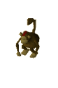
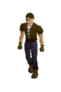
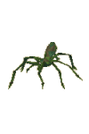

")
Brimhaven (Members)
Introduction

The settlement is quite popular among those wanting to visit the depths of the TzHaar city, or adventurers looking to explore the jungles of Karamja.
Location

Close by, to the east, beneath the volcano, is the TzHaar city, where many would-be heroes go to test their mettle against the mighty TzTok-Jad, or to earn TokKul to purchase some high quality TzHaar weapons and armour.
North-west, across the seas, lies the city of East Ardougne, which you can travel to and from by boat.
Points of Interest

If you're here to learn the secrets of Karamja's jungles, or to train your Agility, then Brimhaven is most certainly the first place you want to visit.
North and north-east of the town are tree patches, where you can grow spirit and fruit trees.
In the east of the settlement is the entrance to the Brimhaven Agility Arena, watched over by its 'owner', Cap'n Izzy No-Beard (and his parrot).
Then again, there's much to be said for joining the salty curs and vagabonds in the bars and trying a wee tipple of that infamous Karamja brew... Arr!
Personalities

Kangai Mau is one of the very few natives of Karamja that ventures into the town of Brimhaven. Normally a private people, the natives of Karamja have sent Kangai Mau to the town to look for a lost Totem, and he cannot return to them empty-handed.
|

A more cunnin' pirate with a parrot you'll be hard-pressed to find outside of Mos Le'Harmless, but Cap'n Izzy is also the owner and proprietor of the Brimhaven Agility Arena, and there's booty to be had, if that's your property.
|
|
| Kangai Mau can be found in the Shrimp and Parrot. | Cap'n Izzy No-Beard can be found at the entrance to the Agility Arena in the north-east of the town. |

It's a rare man that's as grumpy as Lubufu, and a rarer man still that knows the secret to catching Karambwan, the octopus delicacy found in only a few spots around Karamja. Lubufu is both grumpy and knows the secret to catching Karambwan.
|
Alfonse is a bit of an odd chap to come across in Brimhaven, as his manners are impeccable and he's never seen drinking anything more powerful than water. He takes care of what might be called 'customers' at the Shrimp and Parrot, sole purveyor of Karambwan in Brimhaven.
|
|
| Lubufu can be found yelling at people who disturb him on the beach south of town. | Alfonse can be found in the Shrimp and Parrot. |
Quests
The following quest can be started in Brimhaven:
- Tribal Totem (Members)
Jungle Dangers
|

Monkeys are common across Karamja and are extremely simple for anyone to dispatch without any difficulty. They are quick and agile, though, and under some circumstances you'll need a Ranged weapon or spell to have a chance of killing them.
|

Snakes are drawn to the warmth and moisture of jungles, so it's no surprise that Brimhaven has a good few thereabouts. The snakes here are no real threat, and are not poisonous, so they make easy fodder for young adventurers.
|
|
| Monkeys can be found in the jungle around the town. | Snakes can be found in the jungle around the town. |
|

Thieves are going to be common in any town so overrun by pirates and other undesirable 'wholesale plunder redistributors'. They are unlikely to go for your pockets once you show them 'a thing or two', though, as they're essentially cowards.
|

When successful pirates retire - and any pirate that gets to retire is obviously very successful - they gather up their loot and their plunder and set up a nice home. Of course, other less retired pirates might then look to get to their booty, so pirate guards become quite necessary.
|
|
| Thieves can be found wandering the streets of Brimhaven. | The Pirate Guard can be found by the well in the north-east of town. |

Avast! Pirates be the commonest of scoundrels and seadogs ye be findin' in Brimhaven, and a surly bunch o' privateers they are, too. Most Wholesale Plunder Merchants in Brimhaven be there to be drinkin' grog, but some few - the daftest keelhaul-able of them - be there to drink Karamjan rum (which be better than Braindeath, but still dangerous to yer memory, ye see).
|

Guard dogs, like pirate guards, are a bit odd in Brimhaven, but you can only assume that the non-pirate inhabitants have to protect their property somehow. Given how vicious and well-trained these dogs are, they're sure to deter the most determined raiders.
|
|
| Pirates be found wherever there be grog in Brimhaven. | Guard dogs can be found in an enclosed pen in the middle of town. |
|

The native creatures of Karamja are at least as dangerous as the piratical inhabitants of the town, and jungle spiders are an excellent example of this. They won't crunch under your boot, and they won't flee in terror from a flame, but they will try to sink their poisonous fangs into you and carry you away for a later snack.
|
| Jungle spiders can be found in the jungles around the town. |
Miscellaneous
- Once you've completed the Shilo Village quest, you will be able to use the cart service located north of the town to travel quickly and comfortably between Brimhaven and Shilo Village.
- Near the cart, while you're in the area, you might like to work on your Farming by making the most of the fruit tree patch.
- The pirate's bar in the south of town is a good place to pick up items: there are full and empty beer glasses and a bronze hatchet.
- The entrance to Brimhaven Dungeon (there be dragons! Metal dragons!) lies southwest of town.
- Near the entrance to the Dungeon are some pineapple plants, which are excellent for making supercompost, or a variety of exotic foods and drinks.
- North of town is a sizeable gold mine, and there is another near the entrance to the Brimhaven Dungeon.

More articles in
Cities and Towns
|
|